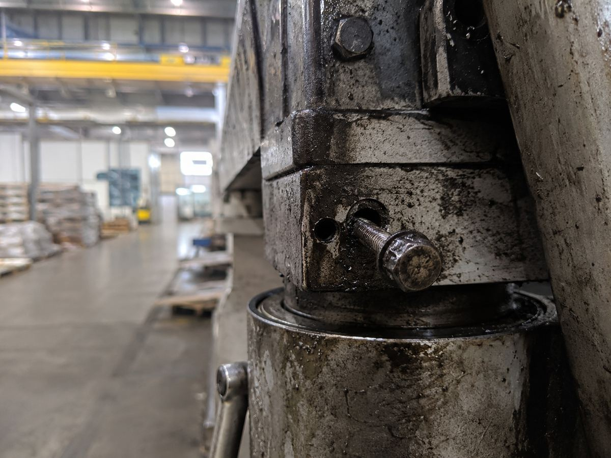
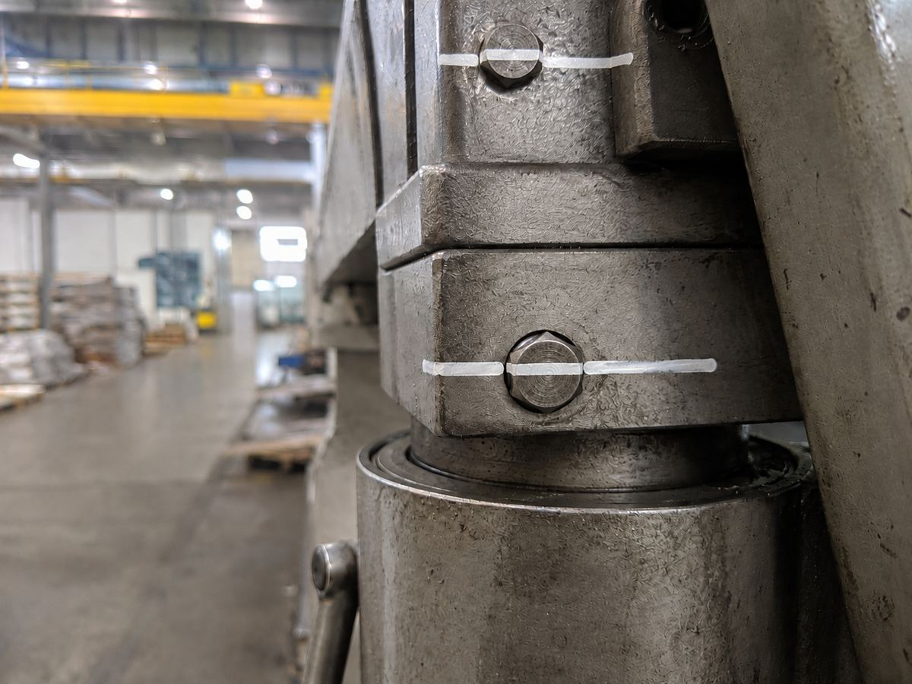

Appka vás provede pěti kroky metody 5S na jednom konkrétním pracovišti - u každého kroku víte, co dělat a proč, a vyfotíte stav před a po. Bez registrace, jedno pracoviště zdarma bez omezení.
Při zavádění 5S si Mirka při umývání stroje všimla, že jeden šroub je úplně volný. Bez čištění by si toho dlouho nikdo nevšiml, dokud by se něco nezadrhlo.
Všechny šrouby na stroji pořádně dotáhli a přes matici i šroub nakreslili bílou čáru. Teď stačí při čištění nebo obchůzce mrknout, jestli čára na matici a na šroubu pořád sedí v jedné linii.


Fotky před a po jsou důkaz, že se něco změnilo. To hlavní ale teprve přijde - jestli to vydrží.
Naplánujte si první kontrolu do pár týdnů a sledujte, jestli pracoviště drží nový standard, nebo se pomalu vrací do starého stavu. Prověřte to časem, ne jen jednou hned po úklidu.